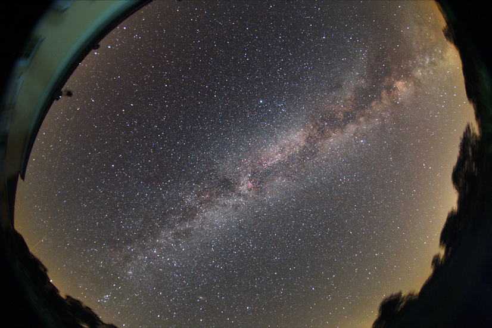
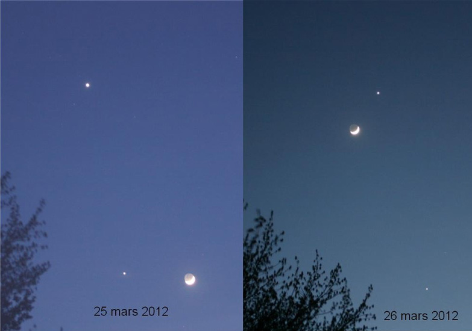
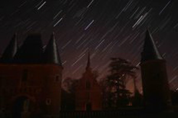
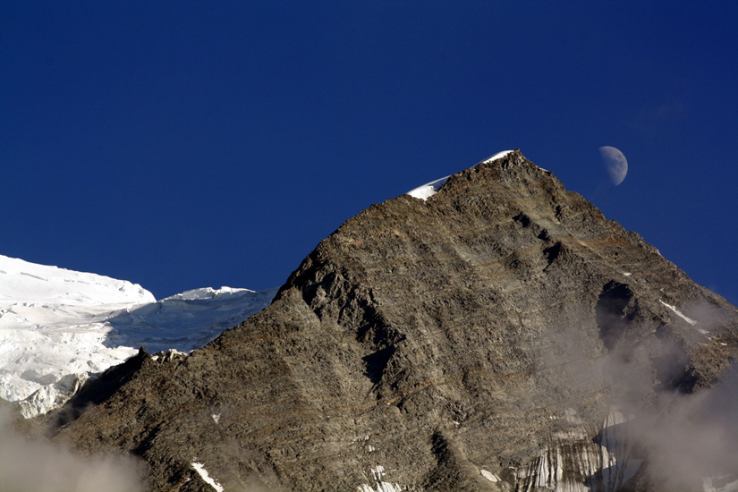
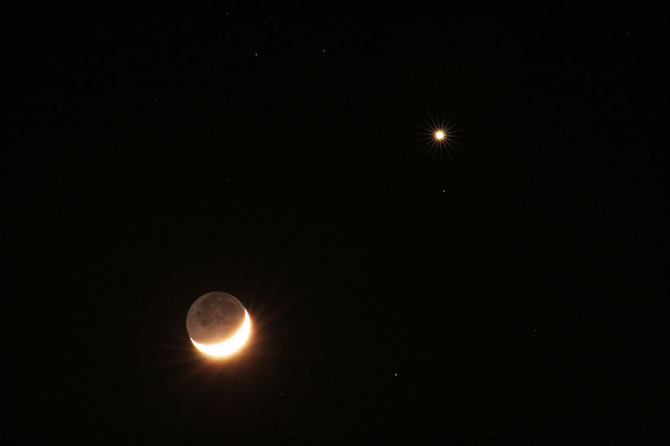
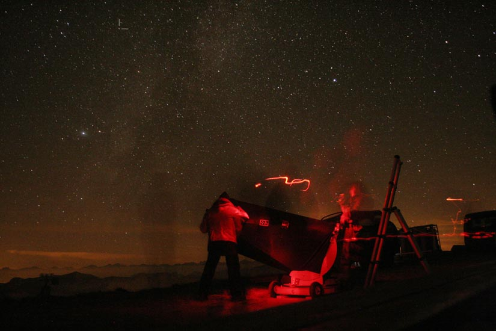
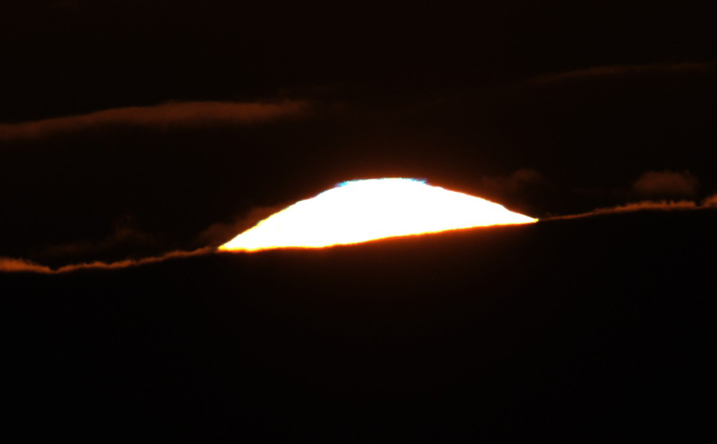

Notre Galaxie, la Voie lactée
Phénomènes Divers


La conjonction Lune-Vénus-Jupiter des 25 et 26 mars 2012 photographiée grâce à un appareil photo numérique Canon 300D muni d'un objectif de 55 mm de focale

Filé d'étoiles au-dessus du château de Chambray à Gouville dans l'Eure

Le Premier Quartier de Lune au-dessus du Mont-Blanc le 18 juillet 2010.

Image d'un rapprochement entre la planète Vénus et la Lune réalisée le 26 mars 2012 grâce à un appareil photo numérique Canon 350D muni d'un objectif de 230 mm de focale. Pose de 4 secondes à 1600 ISO

Une nova (étoile explosive) dans la constellation du Dauphin photographiée en août 2013 à Saint-Véran (Hautes-Alpes) grâce à un appareil Canon 350D muni d'un objectif de 18 mm de focale

Le rayon vert photographié au coucher du Soleil dans la Manche le 21 août 2017.